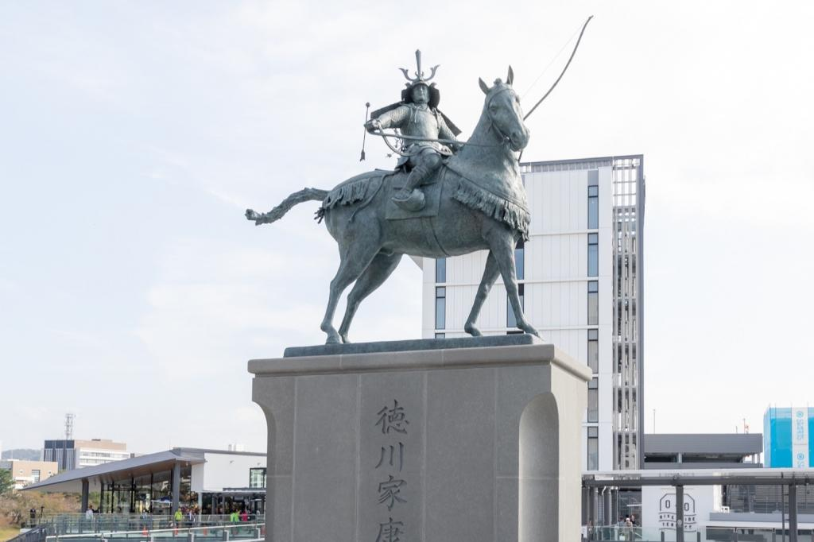

みんなが知っている人から、意外な人まで
岡崎市は東海オンエアの活動拠点です。市内には動画内で映った東海オンエアの聖地がたくさんあります。
聖地巡礼のために全国からファンが訪れていて、その数は年々急増中。
【マップ付き】東海オンエア聖地巡礼・街中パーク＆ウォーク編 - 岡崎おでかけナビ
徳川家康公生誕の地です。NHK・大河ドラマ「どうする家康」が2023年7月現在放送中で、岡崎市も賑わっています。
岡崎城や大樹寺、松應寺など、歴史的なお寺がたくさんあります。
名鉄東岡崎駅の東側には、徳川家康公の銅像もたっています。
